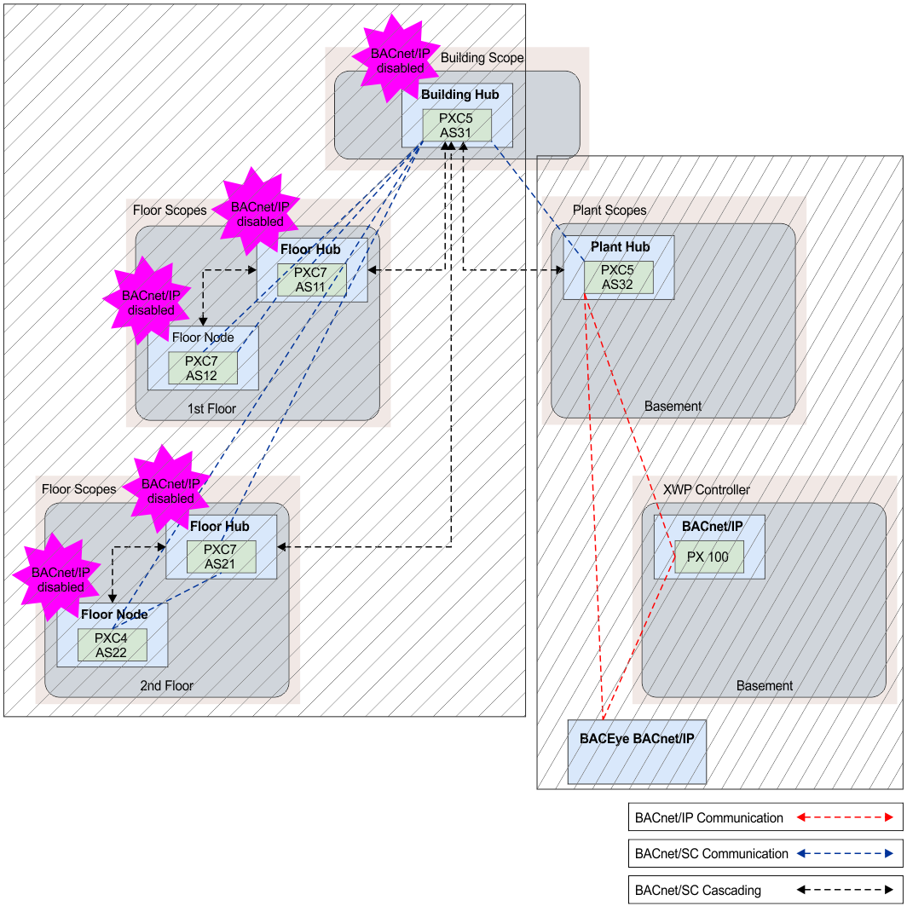

将构建过渡到 BACnet/SC 通信
绿色突出显示字段中的控制器通过 BACnet/SC. 进行通信，禁用 BACnet/IP 通信会使设备通过 BACnet/IP 不可见；只能通过 BACnet/SC. 进行寻址。 Plant Hub（以紫色突出显示）通过 BACnet/SC 与 Building Hub 进行通信，并通过 BACnet/IP 与其子网中的 BACnet/IP 设备进行通信。 Cascadung hub 通过 Plant Hub 将 BACnet/IP 设备集成到 BACnet/SC 网络上，而不会使设备或 BACnet 对象在封闭的 BACnet/SC 网络上可见。

从建筑中心到楼层节点的 BACnet/SC 连接说明了仅描述功能的视觉通信路径。数据始终通过楼层集线器传输！
